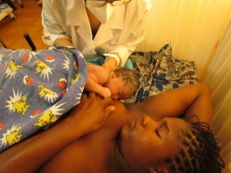
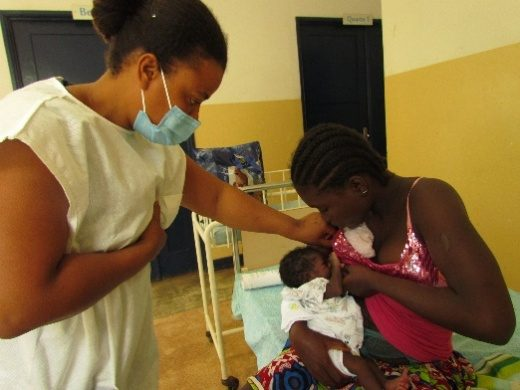

Refreshing and strengthening frontline performance in maternal and child health, aligned with the Baby-Friendly Standards (version 2018/2020) and the global Midwifery Models of Care.
Despite countless efforts, programmes and innovations in maternal and child health, maternal and neonatal mortality from preventable causes remain high worldwide — often linked to unequal access to health services, low adherence to prenatal care, and gaps between what health services offer and what women and adolescents need.
The Baby-Friendly Standards (2018/2020) fill these gaps in assistance for pregnant women, during labour and birth, in the immediate postpartum period, and in care for young children from birth to two years and beyond — adopting a person-centred, respectful, relationship-based approach that supports physiological processes and reserves interventions for clinical need.
The mentoring programme is completely free and does not interfere with your duties at the health facility.
Guided by Regina Pereira da Silva and Vanessa Barroso, who together bring decades of international maternal and child health expertise.
A free certificate is issued at the end of the 15-month programme, covering 16 competencies across 7 domains.
A confidential questionnaire that helps you understand your health facility's starting point. Filling it in is recommended, but not required to join the programme.
Up-to-date resources and online training, module by module, according to the Baby-Friendly version 2020.
Mentoring Programme, a Journey of Transformative Practice.
It is recommended that up to three frontline professionals from the same health facility — working with pregnant women, labour and birth, and immediate postpartum — join the programme together.




Photos: UNICEF.